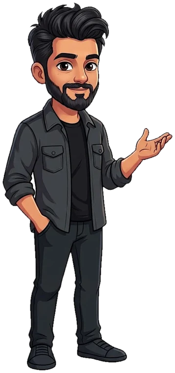

Hey, I’m Ali. How can I help you today?
Your turn
You deserve support from a person today.These lines are free. Please call one, or tell someone you trust.Lifeline 13 11 14 · Kids Helpline 1800 55 1800 · headspace 1800 650 890 · 000 if you are in danger
Ali is an AI character powered by Claude, not a real person. What you type goes to Claude. Not therapy.